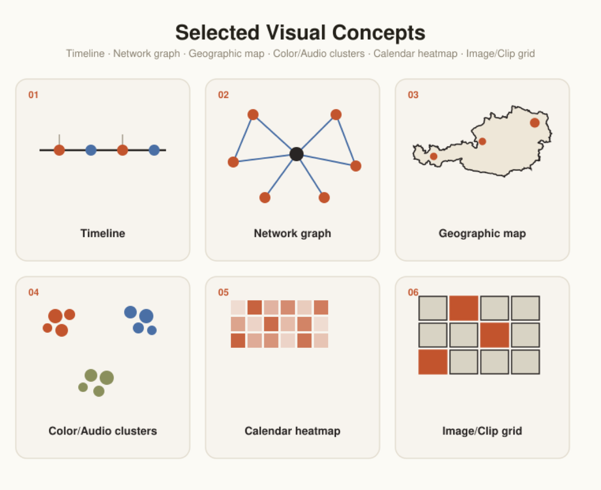
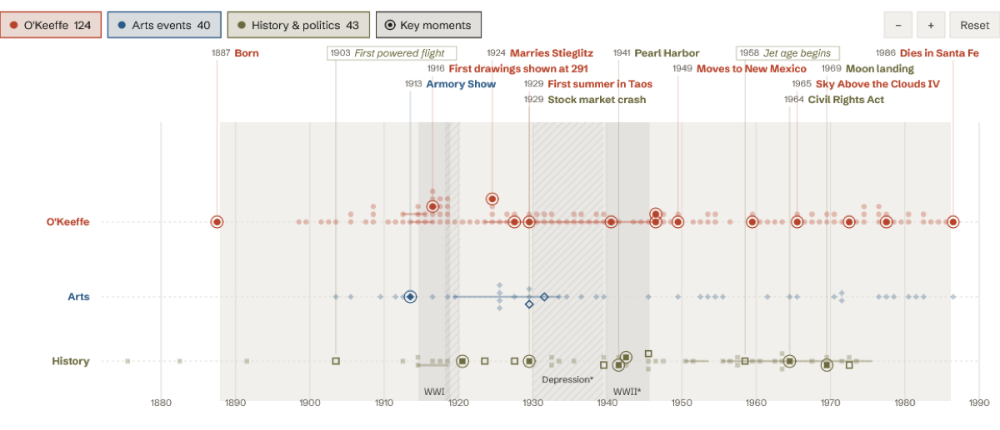
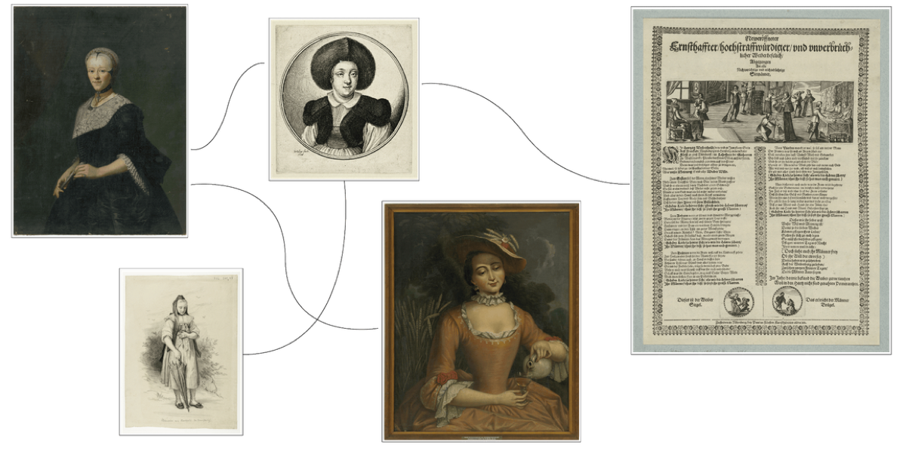
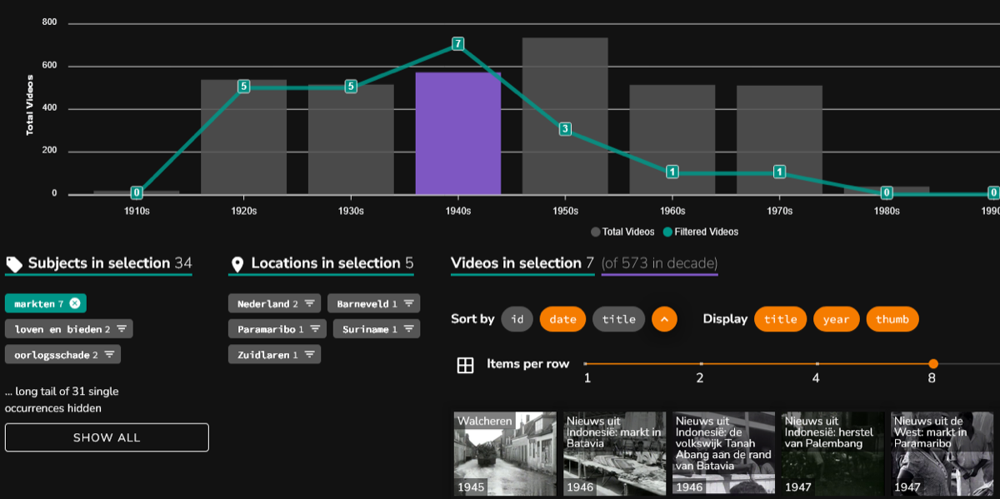
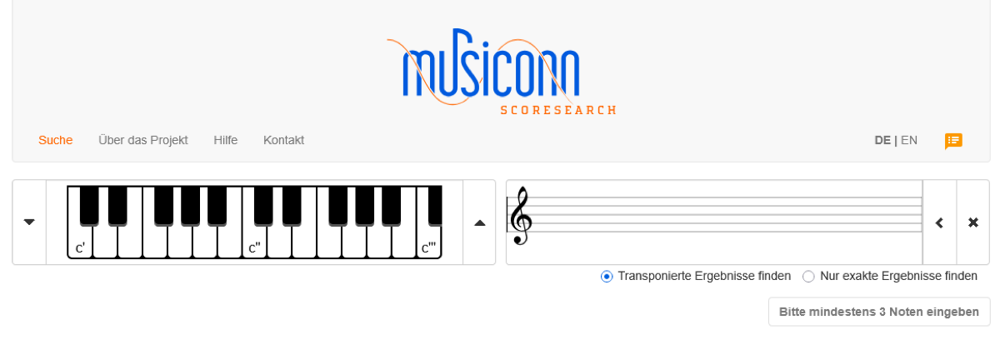
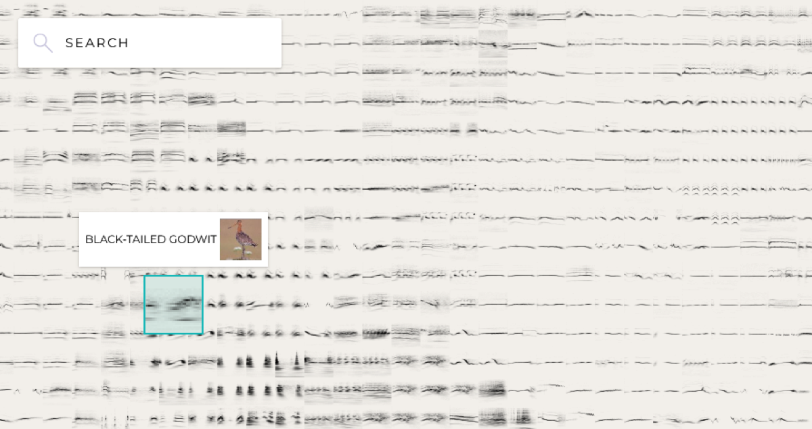
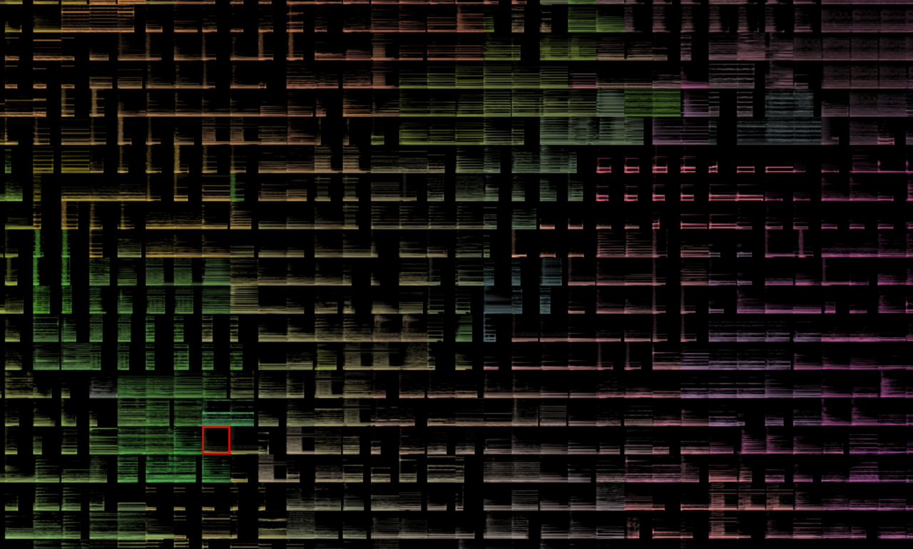
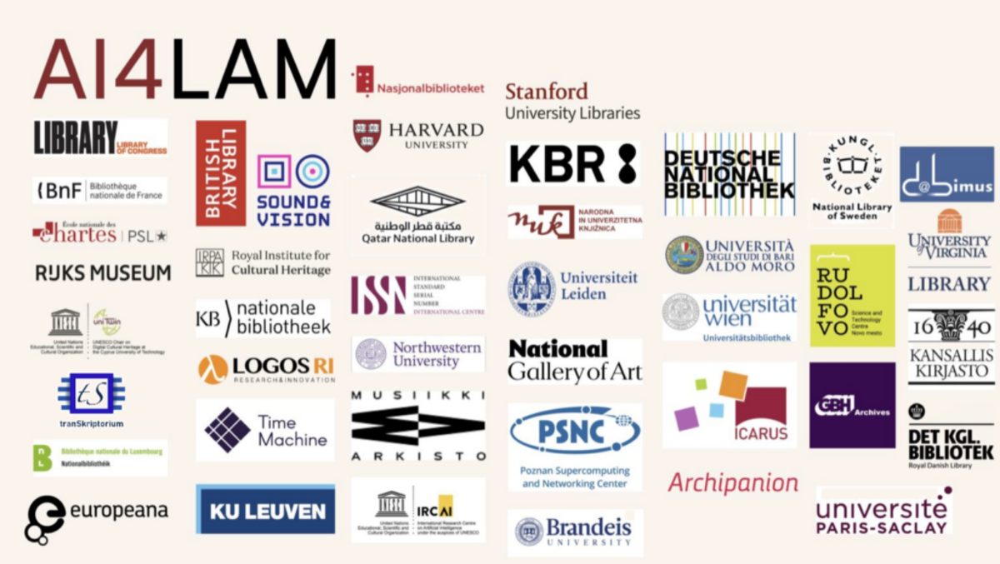
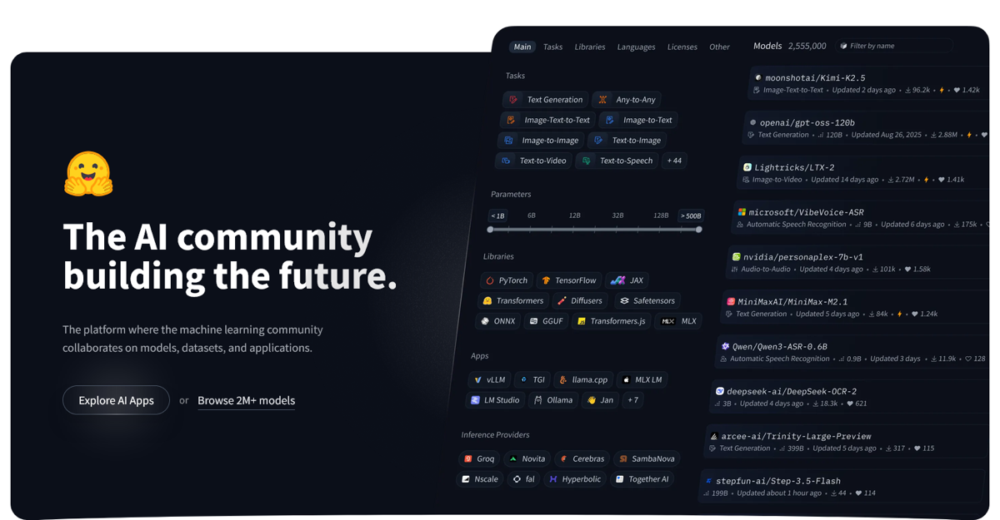
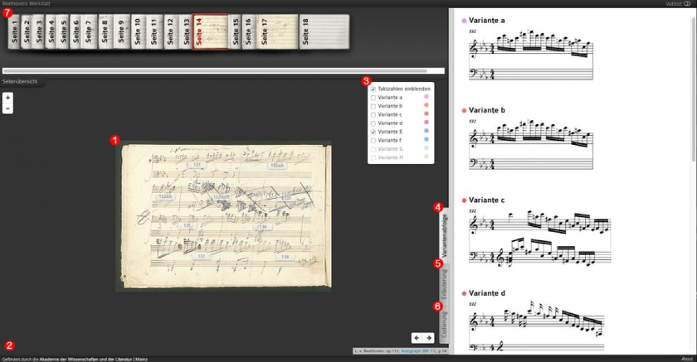

Printed text
Optical Character Recognition (OCR); document structure extraction; Named Entity Recognition (NER); metadata and relationships extraction
Ideas
From digitised material to semantic access: a multitude of possibilities for extracting data, connecting information, designing experience, and collaborating with national and international partners.
Optical Character Recognition (OCR); document structure extraction; Named Entity Recognition (NER); metadata and relationships extraction
Computer Vision (CV) → image extraction and classification; object and face detection
Handwritten Text Recognition (HTR)
Optical Music Recognition (OMR) → symbolic music data
Acoustic feature extraction → pitch and tempo estimation; Automatic Music Transcription (AMT); instrument recognition; audio fingerprints
Georeferencing; toponym recognition
Automatic Speech Recognition (ASR); Voice Activity Detection (VAD) → transcription; speaker and language identification
Frame extraction and sampling; scene segmentation; object and face detection; action recognition
3D capture / digitization; structured-light scanning; laser scanning (LiDAR); photogrammetry → surface curvature analysis; inscription detection; fragment reassembly
Knowledge graph (KG) construction; connecting objects, people, events, and places across ÖNB collections and museums; linking to external datasets (Linked Open Data principles); metadata enrichment
Relationship inference; discovery of previously unknown or implicit relationships; graph-based reasoning
Discovery systems; semantic search; answering specialized competency questions through complex graph-pattern matching and multi-hop traversals




Conversational or natural-language queries; recommendation systems; similarity search




On international, openly accessible platforms (e.g. Hugging Face, Zenodo).

Expansion of the ÖNB's digital collection on Beethoven with text and music encodings; collaboration with the project "Beethovens Werkstatt" on the occasion of his 200th death anniversary.
